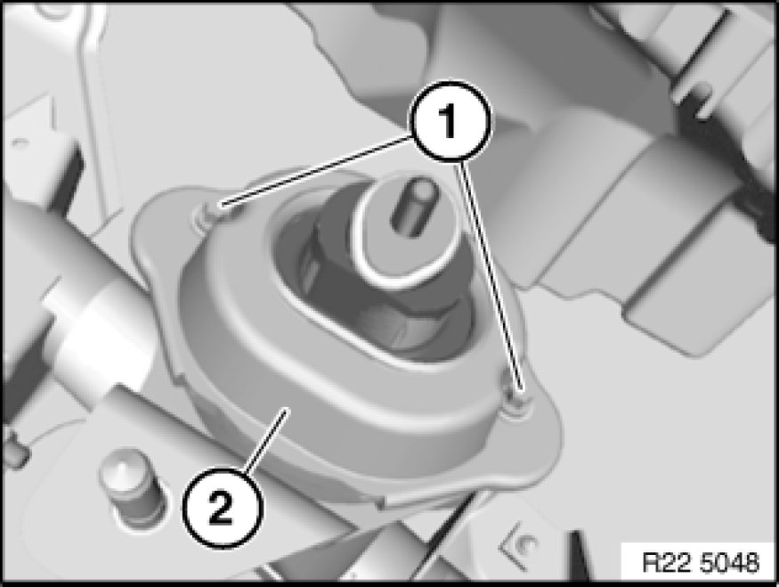
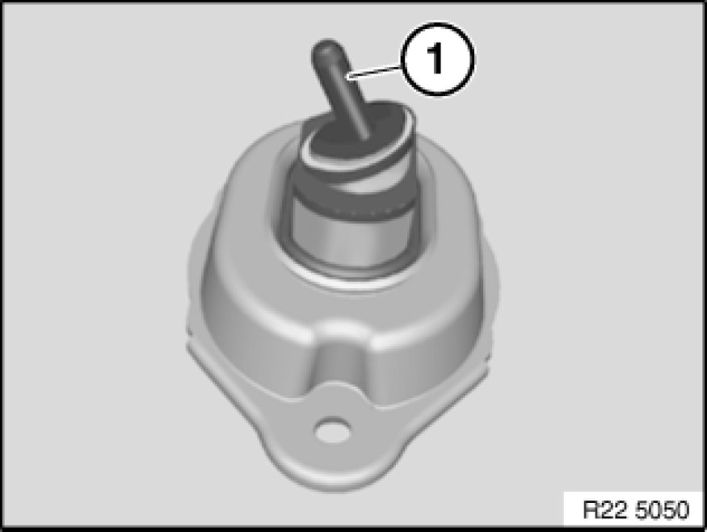

Replacing Left Engine Mount (N52K)
22 11 011 - Replacing left engine mount (N52K)

Necessary preliminary tasks:
- Remove left engine support arm Replacing Left Engine Support Arm (N52K)

Release screws (1) and remove engine mount (2).
Tightening torque 22 11 1AZ Specifications.

Installation:
Note installation position.
Threaded pin (1) must point outwards.
Engine mount designations:
Right engine mount
- Even component number
Left engine mount
- Odd component number